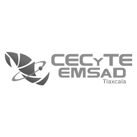

Emsad
Directivo Jose Rolando Jimenez Romano Responsable del Centro Horario de atencion : LUN- VIER 8:00-13:00 HRS Correo Electronico:emsadyauhquemecan@cecytlax.edu.mx Direccion Av. Juarez S/N, Primera Seccion, Barrio La Magdalena Tepepa, San Dionisio Yauhquemehcan, Tlax.
Logo de la escuela
Logo de la escuela

Descripción General
"Vasos locos los compadres"
- Es un proyecto que actualmente nos está ofreciendo sus servicios debido a que la empresa ha estado estudiando todos los aspectos para que la empresa sea una de las mejores.
Objetivos de la empresa
- Ofrecer una buena experiencia al cliente al momento de elaborar su producto, tener la aprobación de los clientes al tener su producto, obtener mayor productividad, ofrecer una excelente servicio al cliente, atraer y retener al capital humano, tener un crecimiento sostenible y sobresalir ante la competencia.
Políticas de la empresa
- Asistencia y esquemas de permisos
- Sistemas de evaluación de desempeño
- Responsabilidad hacia la sustentabilidad
- Privacidad de la información
- Seguridad y salud industrial
- Otros términos y condiciones de empleo
PROCESOS DE ELABORACION
Inicio
- 1. Como primer paso debemos comprar y facturar la mercancia que se requiere
- 2. Debemos revisar que la mercancia este en orden y sea la correcta, en caso de no ser así regresar la mercancia con la factura
- 3. Si la mercancía es la correcta, demos sellar la factura y registrar la entrada al almacén y registrar en Kardex
- 4. Una vez verificado que todo este bien procedemos elaborar el producto y registrar la salida de la mercancia que se va a ocupar en Kardex
- 5. Después de haber registrado la salida de mercancía procedemos a colocar el tamaño de vaso de la preferencia del cliente
- 6. Procedemos a poner pepino picado en el vaso
- 7. Después de haber puesto pepino ponemos zanahoria rayada en el vaso
- 8. Procedemos a poner jicama rayada al vaso
- 9. Después pondremos botana de la preferencia del cliente.
- 10. Poner gomitas de la preferencia del cliente
- 11. Poner la cantidad de chamoy y salsa al gusto del cliente
- 12. Colocar al vaso un tenedor y una servilleta
- 13. Cobrar al cliente el producto
- 14. Entregar producto al cliente
- 15. En caso de que haya más clientes o el cliente quiera otro producto, volver a repetir los procedimientos, en caso de no ser así no sacar más mercancía.
Fin